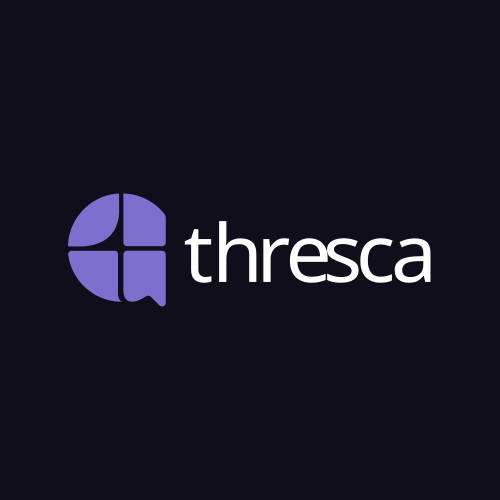
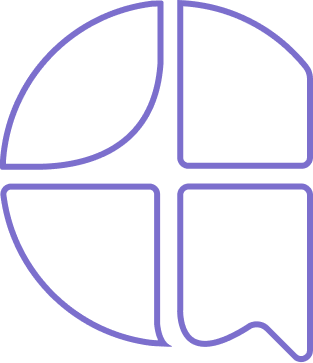
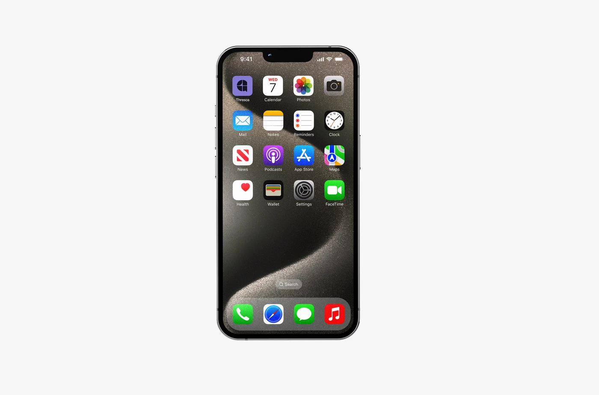
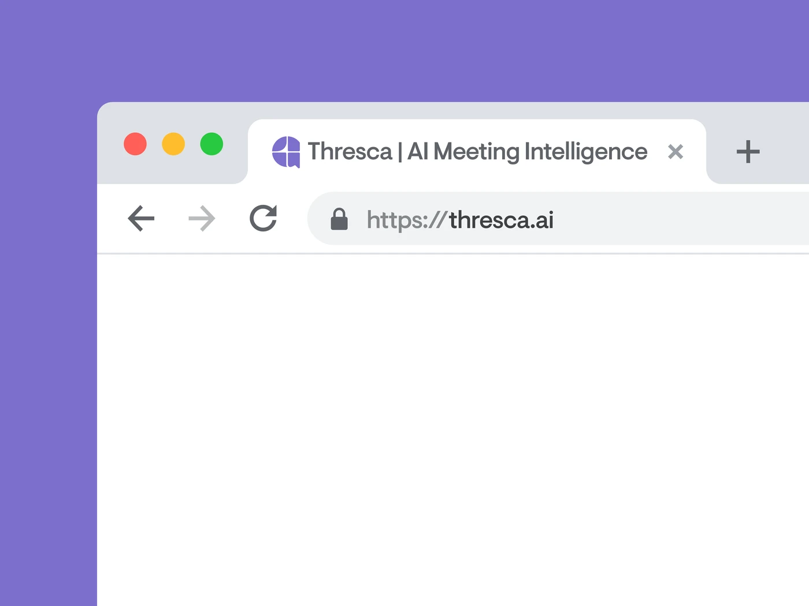
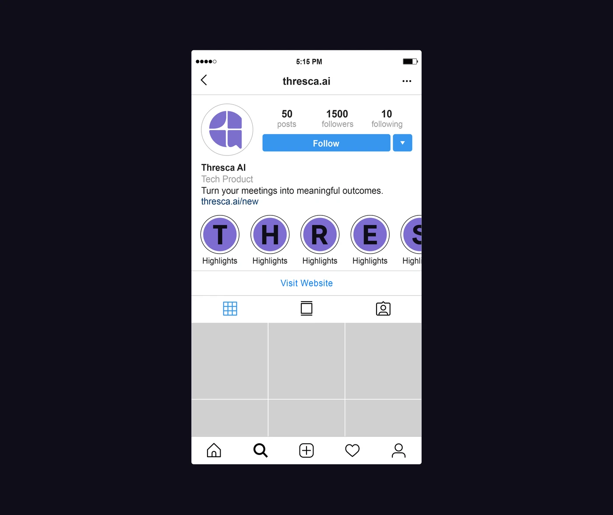
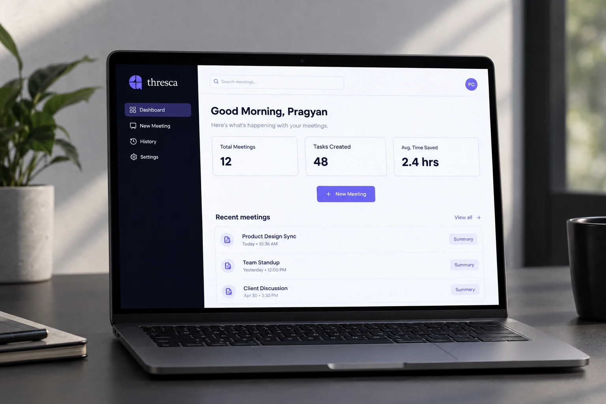

Brand Identity 2026
Thresca
Turn your meetings into meaningful outcomes.
- Role
- Brand Identity, Product Design
- Tools
- Figma, Illustrator,
- Timeline
- 5 Weeks

The context
Meetings are valuable. But the follow-up isn't.
Most meeting AI tools join the call, which can feel intrusive or uncomfortable. Thresca was built as a quieter alternative — listening to the audio, extracting what matters, and turning it into structured notes and actionable tasks.
Research
Explored how meeting information could be captured, structured and revisited without requiring an AI to join the conversation.
- Existing AI meeting tools
- Meeting transcripts & information
- Notes, decisions & action items
- User privacy & comfort
Direction
Defined a product direction that felt quiet, focused and useful — without adding another participant to the meeting.
- Passive meeting capture
- Simplicity & speed
- AI without interruption
- Clear information hierarchy
System
Built Thresca around a visual identity that feels intelligent, modern and approachable — without becoming overly technical.
- Logo construction
- Logo variants
- Typography
- Colour system
Application
Applied the identity to the product experience, creating a focused interface for turning meeting input into structured, actionable information.
- Dashboard
- New Meeting
- AI output
- Task tracking
The Mark
[Placeholder — Thresca mark copy not yet written]
[The source design's copy for this section describes Sarthi's mark, not Thresca's. Replace with real copy about Thresca's own four-quadrant mark.]
- Grid
- [placeholder]
- Weight
- [placeholder]
- Minimum size
- [placeholder]

Type & Color Palette
A calm, clear and Approachable system
Typeface shown here is General Sans, a free stand-in. Antonia was referenced in the design file but not supplied — self-host it and swap the --font-display-alt variable in thresca.css once you have it.
The Complete Visual Identity



